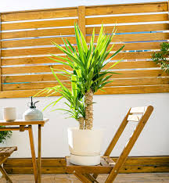

¿Que tipo de plantas estas buscando?
Interior

Estas plantas necesitan humedad en el ambiente (no es lo mismo que humedad en el suelo) y temperaturas cálidas. Para la humedad en el ambiente podemos conseguir un rociador y aplicarles el rocío a las hojas directamente.
Exterior
Se caracterizan principalmente por su cultivo al aire libre. La mayoría de variedades son muy resistentes, requieren menos cuidados que otra vegetación y aportan naturalidad al espacio.
Colgante

Son aquellas cuyos tallos no son erguidos; por lo que la planta no puede sostenerse por sí misma. Tiende a crecer al ras del suelo o desarrolla diferentes formas que le permiten trepar por una superficie vertical en busca de luz.
Acuatica

Son aquellas que viven sumergidas parcial o totalmente en el agua. Se adaptan a diversos medios acuáticos como lagunas, ríos, pantanos, etc. Requieren de una gran humedad para crecer y desarrollarse.